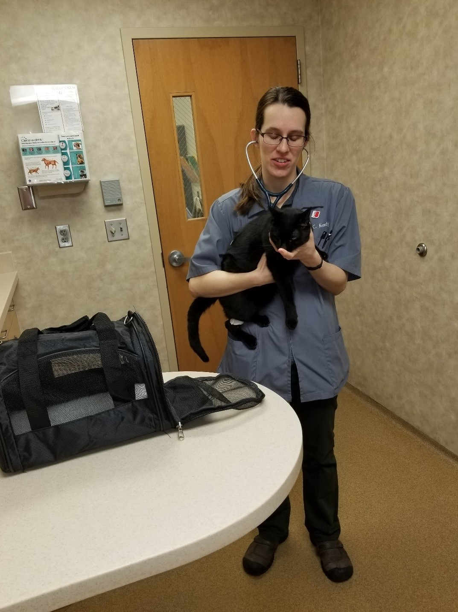

Chelsea grew up in Papillion, NE loving animals. That love soon drove her to experience many different situations that led her down the path to become a veterinarian. As Chelsea grew up she began wondering what she wanted to do in life. She was a very caring person and loved working with people and thought that she might want to be a Missionary and travel to Africa to help their children. She took trips with the church youth group to Canada and helped the homeless and events like this were shaping who she would become later in life. Later as she went through High School she applied to a new program at her school designated as a Zoo Academy. In this program students were able to go to their normal High School for half the day and then spend the rest of the day at the Omaha Henry Doorly Zoo for the rest of her classwork. Working with the zoo veterinarians and doing all kinds of cool projects involving the animals and how to care for them. As she progressed through the academy she still had a strong drive to become a Missionary and travel to Africa. As her parents we sat her down and looked at all of the pros and cons of starting out as a Missionary and paired that with pros and cons of going to college and getting a degree prior to selecting that as her career path. She chose to take the college path and ended up at the University of Nebraska-Lincoln in a pre-vet program. She started out with what would be her best mentor in life. A doctor at the University of Nebraska-Lincoln encouraged her to assist with a project involving the digestive tracts of Alpaca's. She was instrumental in running tests and documenting results for that project and ended up being cited in the research document that was presented. This experience cemented the decision to become a veterinarian. She ended up getting accepted to Iowa State's veterinarian program and now is a Doctor of Veterinary Medicine.
Apr 29, 2019

Quote from Dr. Kennedy!
"My whole life I've known that if I treated people the way that I wanted to be treated that my life would be rewarding to me. When I decided to become a veterinarian I took that same philosophy and applied it to my practice with regards to caring for animals."